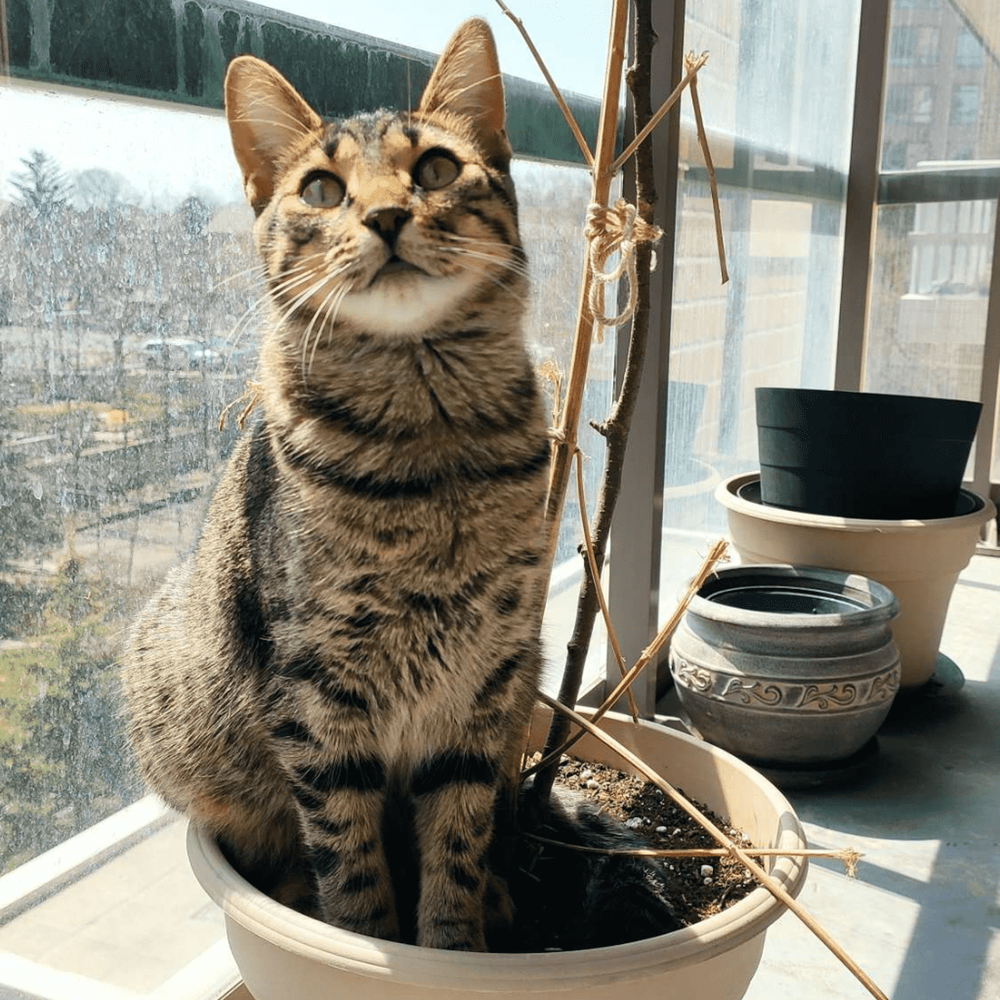

Based in Canada
Freelance Availibility
VERY LIMITED HOURS
About
HUNT3R

I am a full time student and a developer for HTML CSS JAVASCRIPT and PYTHON and a bit of JAVA. I am currently working on projects for Minecraft called "Insignia" and "Copeium Client" Clients I use are: Boze, Future, Mio, Rusherhack, Prestige, Abyss, Rise, Novoline.wtf, Myau, Reactor, Opal, Tenacity/Rose(discontinued)
Recent
PROJECTS

Nothing
Nothing Yet

Nothing
Nothing Yet

Nothing
Nothing Yet